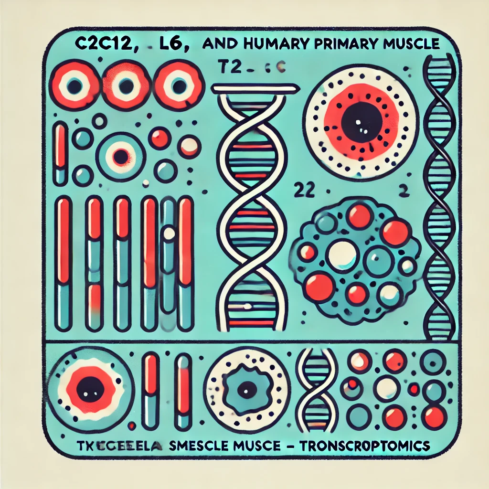

Skeletal Muscle Composition & Remodelling
Aging Muscle
Human skeletal muscle transcriptome throughout the lifespan and its alterations in sarcopenia.

Muscle Models
Transcriptome of C2C12, L6 and human primary myotubes compared to skeletal muscle tissue.
Fiber Type Profiling
Profiling of the proteome and transcriptome of human skeletal muscle type I and type II fibers.
Myotube Heterogeneity
Transcriptome of primary skeletal myotubes processed at different times with various methods.